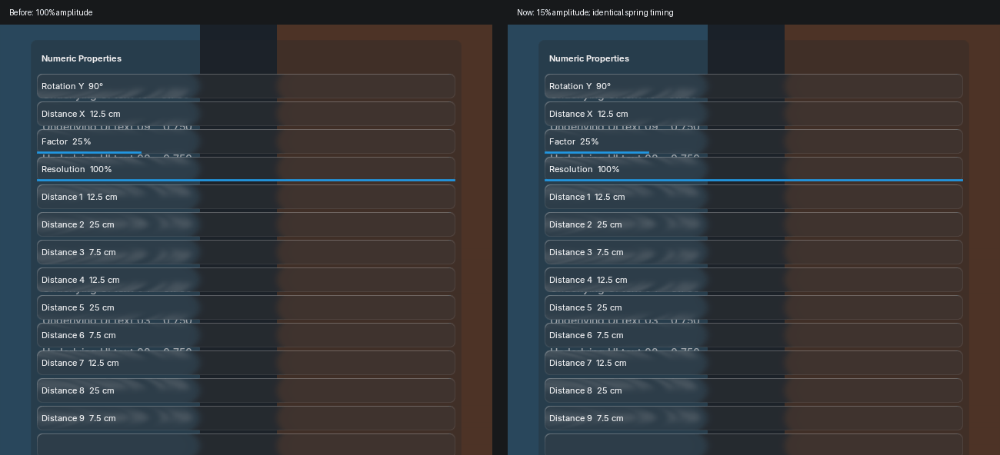
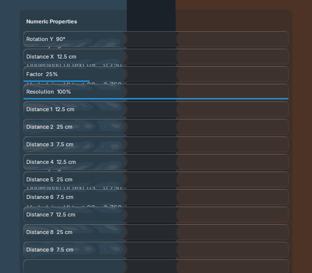

The same recorded input, dimensions, theme and backdrop. Wide fields now multiply the resolved animation amplitude by 0.15; spring timing and logical hit targets are unchanged. Compact fields and menu animations keep their current strength.

Resting pixels are byte-identical to v1. Both recordings are actual Blender frames; this is an implementation comparison, not generated-reference approval.

One shared capture and strong blur, five retained offscreens; no extra capture or layout rebuild during animation. Settled and disabled pixels equal rest.
Timing/resources/source hashes · Comparison checks · Next property support: event fields · Every menu option follows the bounce